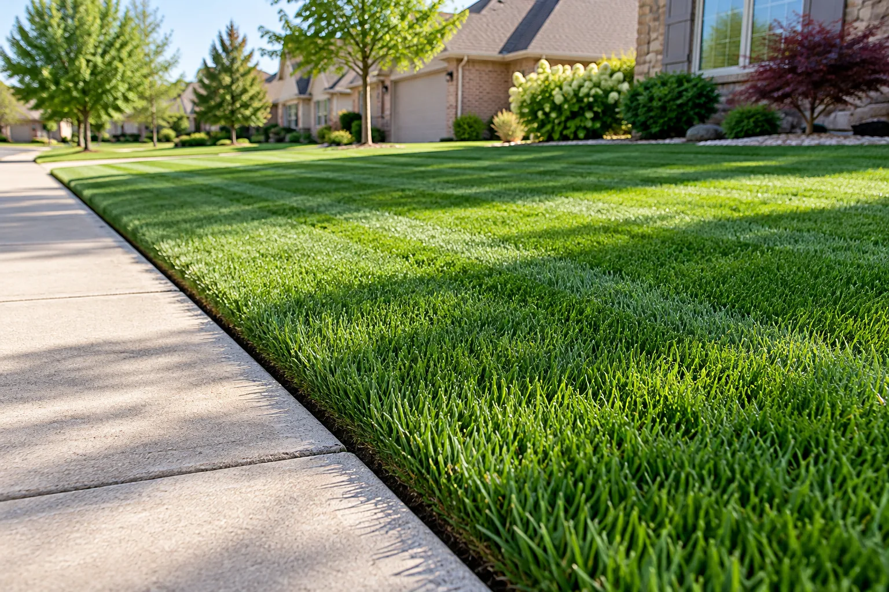
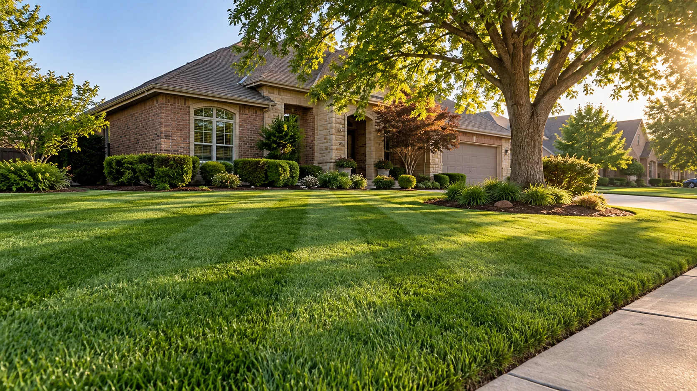
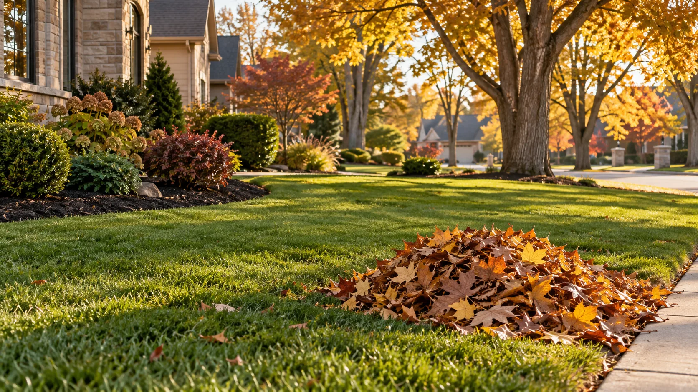

01 / EVERYDAY CARE
Lawn mowing & edging
A neat cut, crisp edges, and a clean finish that makes the whole yard feel refreshed.
Ask for a mowing quote
WICHITA, KANSAS LAWN CARE
Dependable mowing, clean edges, and thoughtful yard care from a local team that treats your property like it matters.
Serving homeowners in Wichita, KS
WHAT WE DO
From routine mowing to the big seasonal reset, we'll help your property look cared for without taking over your weekend.

A neat cut, crisp edges, and a clean finish that makes the whole yard feel refreshed.
Ask for a mowing quote
Help with leaves, fallen branches, and the mess that builds up between seasons.
Ask about cleanupLandscape maintenance, gutter cleaning, junk removal, and other cleanup projects—just ask.
Tell us what you needA BETTER WAY TO CARE FOR YOUR YARD
Getting your lawn taken care of should be simple. Tell us what your property needs, get a clear quote, and choose the service that works for you.
Let's talk about your yardShare the address, the service you need, and any details we should know.
We'll talk through the work and pricing before anything gets scheduled.
Come home to a yard that's ready to be enjoyed.
ABOUT JUST CUT IT
Just Cut It Lawn Care is a locally owned Wichita business offering residential lawn care and cleanup. The goal is straightforward: make it easier to keep your property looking its best.
Need routine mowing or help with a bigger job? Reach out and tell us what you have in mind.
They did a fantastic job. I’d recommend them anytime.
Customer feedback on GreenPal ↗
LET'S GET STARTED
Tell us a little about your property and the work you need. You can also call or message us directly.